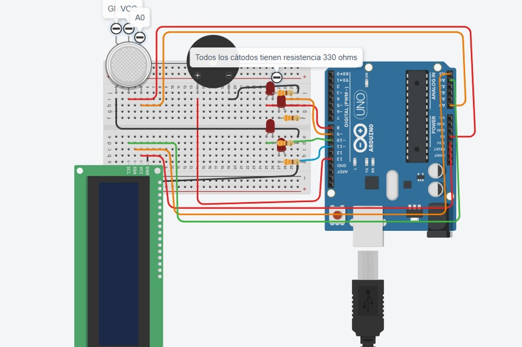

Proyecto Arduino: Alcoholímetro
Comparación de Implementaciones - Código Inicial vs Código Final
Información del Proyecto
Universidad Cooperativa de Colombia
Ingeniería de Software
Primer Semestre - 1B
Integrantes del Equipo
Jenifer Urbano
ID: 927575
Drako Salazar
ID: 930303
Nicolas Díaz
ID: 928955
Juan López
ID: 936525
Diagrama Inicial

Esquema del circuito con pantalla OLED y configuración inicial
Diagrama Final

Esquema del circuito con pantalla LCD y mejoras implementadas
Cambios en Librerías y Dependencias
| Aspecto | Código Original | Código Modificado | Tipo de Cambio |
|---|---|---|---|
| Librería de Pantalla | Adafruit_SSD1306.h y Adafruit_GFX.h (pantalla OLED) | LiquidCrystal_I2C.h (pantalla LCD) | CAMBIO COMPLETO |
| Librería Wire | #include "Wire.h" | No incluida | ELIMINADO |
Cambios en Configuración de Hardware
| Componente | Código Original | Código Modificado | Tipo de Cambio |
|---|---|---|---|
| Pantalla | OLED SSD1306 (dirección 0x3C) | LCD I2C 16x2 (dirección 0x27) | CAMBIO COMPLETO |
| Pin LED Alto | Pin 8 | Pin 5 | MODIFICADO |
| Pin LED Medio | Pin 9 | Pin 4 | MODIFICADO |
| Pin LED Bajo | Pin 10 | Pin 3 | MODIFICADO |
| Pin LED Muy Bajo | Pin 11 | Pin 2 | MODIFICADO |
| Pin Zumbador | Pin 13 | Pin 6 | MODIFICADO |
| Sensor de Alcohol | A0 (implícito) | A0 (explícito como variable) | MEJORADO |
Cambios en Variables y Configuración
| Variable/Configuración | Código Original | Código Modificado | Tipo de Cambio |
|---|---|---|---|
| Valor límite | int valor_limite = 500 | Eliminado (ahora usa umbrales dinámicos) | ELIMINADO |
| Variable alcohol | float valor_alcohol | float sensor_In | RENOMBRADO |
| Calibración | No existe | Variables: sensorBaseline, sensorReady, startTime, WARM_UP_TIME | AGREGADO |
| Cálculo porcentaje | porcentaje = (valor_alcohol / 10000) | mg_l = max(0, sensorDiff / 200.0) | CAMBIO COMPLETO |
Cambios en Funcionalidad
| Funcionalidad | Código Original | Código Modificado | Tipo de Cambio |
|---|---|---|---|
| Calibración del sensor | No existe | Sistema completo de calibración con 5 segundos de precalentamiento | AGREGADO |
| Baseline del sensor | No existe | Toma 10 lecturas promedio para establecer valor base | AGREGADO |
| Unidades de medición | Valor crudo y porcentaje | mg/L (miligramos por litro) | CAMBIO COMPLETO |
| Método de cálculo | Valor directo del sensor | Diferencia respecto al baseline | MEJORADO |
Cambios en Lógica de Umbrales
| Nivel | Código Original | Código Modificado | Tipo de Cambio |
|---|---|---|---|
| Nivel Alto | > 500 (valor absoluto) | > 150 (diferencia del baseline) | MEJORADO |
| Nivel Medio | > 370 (valor absoluto) | > 100 (diferencia del baseline) | MEJORADO |
| Nivel Bajo | < 340 (valor absoluto) | > 50 (diferencia del baseline) | CORREGIDO |
| Nivel Muy Bajo | > 340 (valor absoluto) | > 20 (diferencia del baseline) | CORREGIDO |
| Sin detección | No existe | <= 20 (diferencia del baseline) | AGREGADO |
Resumen de Mejoras Principales
- - Cambio completo de hardware de display (OLED → LCD)
- - Sistema de calibración automática del sensor
- - Medición más precisa usando baseline y diferencias
- - Unidades de medición reales (mg/L en lugar de porcentajes arbitrarios)
- - Interfaz de usuario más amigable con mensajes descriptivos
- - Lógica de umbrales más robusta y realista
- - Mejor organización del código y estructura más clara